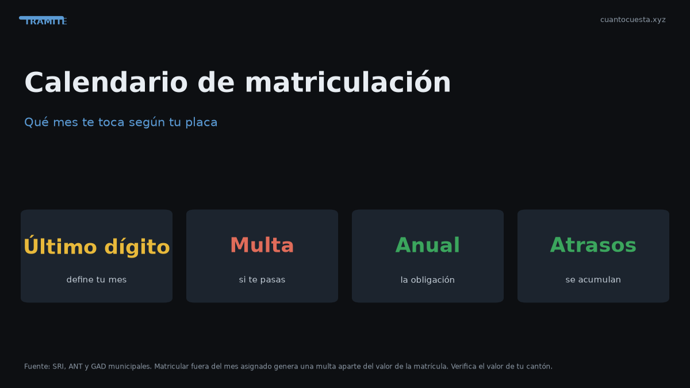

Calendario de matriculación en Ecuador: qué mes te toca según tu placa
La matrícula se paga según el último dígito de tu placa. Revisa qué mes te corresponde, la multa por matricular fuera de mes y cómo pagar años atrasados.

La matrícula vehicular se paga una vez al año, en el mes que corresponde al último dígito de tu placa. Ese mes lo define el calendario oficial y no es opcional: matricular fuera de tu mes genera multa.
El calendario se publica cada año y agrupa los vehículos por el último dígito de la placa. Saber tu mes te permite agendar la revisión técnica a tiempo y evitar recargos.
Cómo funciona el calendario por último dígito
El calendario agrupa los vehículos por el último dígito de la placa. A cada dígito le corresponde un mes del año. Así, todos los vehículos terminados en 1 matriculan en un mes, los terminados en 2 en otro, y así sucesivamente.
La ventaja del sistema es repartir la carga: si todos matricularan en enero, ninguna ventanilla aguantaría la demanda.
| Último dígito de placa | Mes asignado |
|---|---|
| 1 | Según calendario oficial del año |
| 2 | Según calendario oficial del año |
| 3 | Según calendario oficial del año |
| ... | ... |
| 0 | Según calendario oficial del año |
Los meses concretos por dígito se confirman en el calendario de matriculación vigente de la ANT y de tu municipio. No existe una tabla fija que sirva todos los años.
No uses el calendario del año pasado. El calendario de matriculación se publica o ajusta cada año: el mes que te tocó el año anterior no necesariamente es el de este año. Confirmarlo toma dos minutos y evita una multa.
Por qué se organiza por placa y no por otro criterio
- Distribuye los trámites a lo largo de 12 meses.
- Permite planificar la revisión técnica, que acompaña a la matrícula.
- Facilita el cruce de deudas: en tu mes revisan el estado completo de tu vehículo.
- Ordena la recaudación municipal y nacional.
La multa por matricular fuera del mes
Matricular fuera del mes asignado genera multa. El monto y los recargos dependen de la normativa vigente y del tiempo de atraso. La lógica es simple: el calendario existe para que pagues en fecha y pagar tarde tiene costo.
| Situación | Consecuencia |
|---|---|
| Matricular en tu mes | Sin multa por calendario |
| Matricular en un mes posterior del mismo año | Multa más recargos |
| Acumular un año completo | Deuda más intereses |
| Acumular varios años | Deuda acumulada, posible coactiva y bloqueo de trámites |
No presentarse o no aprobar la revisión técnica
La revisión técnica va de la mano con la matrícula. No presentarse o no aprobar también genera multa. Y en la revisión hay reglas útiles que conviene conocer:
- El primer rechequeo es gratuito dentro del plazo.
- La tercera revisión cuesta la mitad de la tarifa.
- La cuarta revisión cuesta tarifa completa.
- El adhesivo cuesta $8 adicionales a la tarifa.
Tarifas referenciales: $35 livianos, $50 pesados, $27 taxis.
Qué pasa si te pasan años sin matricular
El vehículo acumula deuda año tras año. Las matrículas viejas generan intereses y la deuda puede escalar. Las consecuencias prácticas son serias:
- No puedes traspasar el vehículo si quieres venderlo.
- No puedes circular legalmente.
- Puede entrar a coactiva.
- Otros trámites (duplicados, cambios de características) se bloquean.
Un auto con tres o cuatro matrículas atrasadas vale mucho menos en el mercado: cualquier comprador que revise la placa verá la deuda y exigirá descontarla del precio. Si la deuda es grande, muchos compradores simplemente se retiran.
Cómo pagar varios años atrasados
- Consulta tu placa en los canales oficiales de la ANT o de tu municipio.
- Revisa cuántos años figuran pendientes y el valor de cada uno.
- Suma los recargos e intereses: la deuda actualizada suele ser mayor que la suma de las matrículas nominales.
- Paga en ventanilla o en línea, según el canal disponible en tu ciudad.
- Guarda todos los comprobantes: el pago se refleja, pero el respaldo nunca sobra.
- Verifica el estado del vehículo después de pagar, antes de intentar otros trámites.
Si la deuda es considerable, pregunta si existe facilidad de pago. No todas las entidades la ofrecen ni con las mismas condiciones.
Cuánto cuesta la matrícula 2026
La matrícula promedio es de ~$180 al año y el rango va de unos $35 a más de $1.800 según el avalúo. Incluye cinco rubros:
| Rubro | Detalle |
|---|---|
| IPVM (SRI) | 0,5% a 6% progresivo sobre el avalúo |
| Rodaje municipal | Quito ~$40, Guayaquil ~$30, Cuenca ~$25 |
| SPPAT | ~$26,74 para liviano representativo |
| Tasa ANT | Tarifa del servicio de matriculación |
| Revisión técnica | $35 livianos, $50 pesados, $27 taxis |
El avalúo del SRI define todo y se deprecia 20% anual, con un piso del 10% del PVP original.
Cómo saber tu mes exacto
- Revisa el último dígito de tu placa.
- Consulta el calendario oficial de matriculación del año en curso.
- Confirma la fecha límite de tu mes (normalmente el último día hábil).
- Agenda la revisión técnica con margen dentro de tu mes.
- Paga antes del límite y guarda el comprobante.
Resumen práctico
- Tu mes depende del último dígito de tu placa y del calendario vigente del año.
- El calendario cambia cada año: confirma el actual, no uses el del año pasado.
- Matricular fuera de mes genera multa; no presentarse a la revisión también.
- Años sin matricular = deuda más intereses, bloqueo para vender y para otros trámites.
- Paga los años atrasados en ventanilla o en línea y guarda los comprobantes.
- La matrícula promedio es ~$180/año, definida por el avalúo del SRI.
Los meses por dígito, multas y tarifas son referenciales y se fijan por normativa vigente. Confirma el calendario y los valores exactos en la ANT y en tu GAD antes de pagar.
Sigue leyendo
Cambio de características del vehículo en Ecuador: color, motor y carrocería
Cambiar el color, el motor o la carrocería de tu auto exige declararlo en la ANT: cuándo es obl
Certificado Único Vehicular (CUV) en Ecuador: qué es y cómo obtenerlo
El Certificado Único Vehicular (CUV) cuesta $7,50 en Ecuador. Qué información contiene, cuándo
Cómo hacer el traspaso de dominio de un vehículo en Ecuador (paso a paso)
Traspaso de dominio en Ecuador paso a paso: los 4 pasos ante notaría y ANT, el impuesto del 1%
Duplicado de matrícula y placas en Ecuador: qué hacer si las pierdes
Perdiste o te robaron las placas: pasos, denuncia, requisitos, costos ($23 placas, $25 especie,
Impuesto del 1% por compraventa de vehículos usados en Ecuador
El impuesto por compraventa de vehículos usados en Ecuador es el 1% sobre el mayor valor entre
Cómo usamos estos datos
Las cifras de esta guía provienen de fuentes públicas oficiales y tarifarios de concesionarios publicados. Los valores son referenciales: tasas municipales, promociones y precios de repuestos varían. Verifica siempre en la entidad o concesionario antes de decidir.